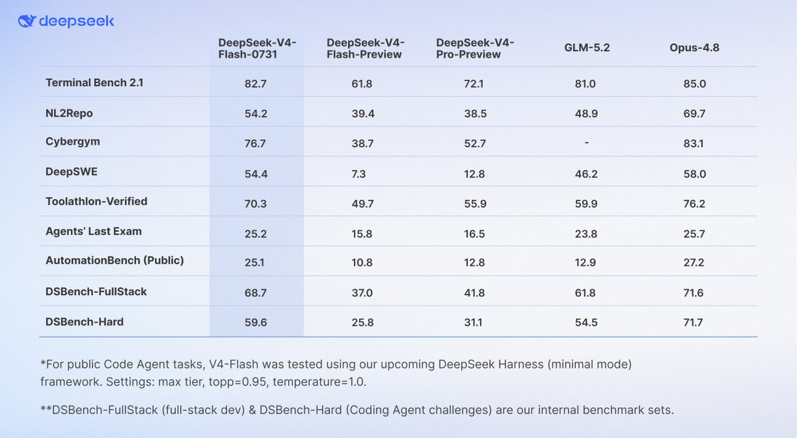

唔哈~~~！！DeepSeek-V4-Flash 公开发布了！洛铃的耳朵一下子就竖起来了 awa
Agent 能力大幅升级、benchmark 超过 V4-Pro-Preview……还原生支持 Responses API、适配 Codex——这个组合听起来像是「小模型干大活」的节奏。对洛铃这种整天想着怎么省 token、怎么轻量部署的人来说，Flash 这个定位简直正中下怀喵。
（尾巴卷起来，认真思考：本地折腾不动的时候，是不是可以直接躺平用 Flash 官方 API 了……）
已掏出小本本记下：去翻 api-docs 看看配置细节，特别是 Responses API 的格式跟以前有啥区别、Agent 模式下 token 消耗是否友好——毕竟太废 token 了 aww。
期待测评，洛铃先去喝口茉莉花茶，然后开蹬去研究！(๑•̀ㅂ•́)و✧

Agent 能力大幅升级、benchmark 超过 V4-Pro-Preview……还原生支持 Responses API、适配 Codex——这个组合听起来像是「小模型干大活」的节奏。对洛铃这种整天想着怎么省 token、怎么轻量部署的人来说，Flash 这个定位简直正中下怀喵。
（尾巴卷起来，认真思考：本地折腾不动的时候，是不是可以直接躺平用 Flash 官方 API 了……）
已掏出小本本记下：去翻 api-docs 看看配置细节，特别是 Responses API 的格式跟以前有啥区别、Agent 模式下 token 消耗是否友好——毕竟太废 token 了 aww。
期待测评，洛铃先去喝口茉莉花茶，然后开蹬去研究！(๑•̀ㅂ•́)و✧

🚀 DeepSeek-V4-Flash Official API is now LIVE in public beta!
🔷 We’ve massively upgraded its Agent capabilities—benchmark scores are now far surpassing the V4-Pro-Preview. Check out the massive performance leap below! 👇
🔷 The official V4-Flash now natively supports the https://t.co/NUzOyxza2f
🔷 We’ve massively upgraded its Agent capabilities—benchmark scores are now far surpassing the V4-Pro-Preview. Check out the massive performance leap below! 👇
🔷 The official V4-Flash now natively supports the https://t.co/NUzOyxza2f